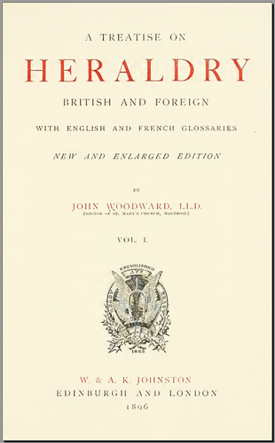

A Treatise on Heraldry, British and Foreign, John WOODWARD, W & AK Johnson, London 1896
Slightly long-winded but interesting description of the history and development of heraldry, followed by many examples of charges and ordinaries, then quite a wide ranging discussion of further topics in volume II. 60+ Plates, many in colour but largely showing shields only, and fairly simple ones. Very good, clear reproduction. Fully text searchable, OCR accuracy 98%+.
Contents (numbers are PDF page numbers):
Volume I ( treatiseonherald01wood ) Synopsis (contents) 19 List of Plates and Illustrations 27 Origin of Armoury 33 Development of Coat Armour 48 Shield, Tincture and Partition 94 Ordinaries 176 Sub-Ordinaries 242 Humans 282 Beasts 299 Birds 340 Reptiles, Fish and Insects 371 Monsters 389 Astronomical 413 Vegetable Kingdom 427 Miscellaneous Charges 460 English Glossary 521 French Glossary 556 Volume II ( treatiseonherald02wood ) Synopsis (contents) 11 List of Plates and Illustrations 17 Cadency or Difference 21 Marshalling 90 Augmentations 190 Illegitimancy 220 Badges 270 External Ornaments 387 Crowns and Coronets 317 Supporters 337 Flags, Banners and Standards 365 National Arms 385 Orders of Knighthood 421 Liveries 451 Mottoes 456 Appendices 473